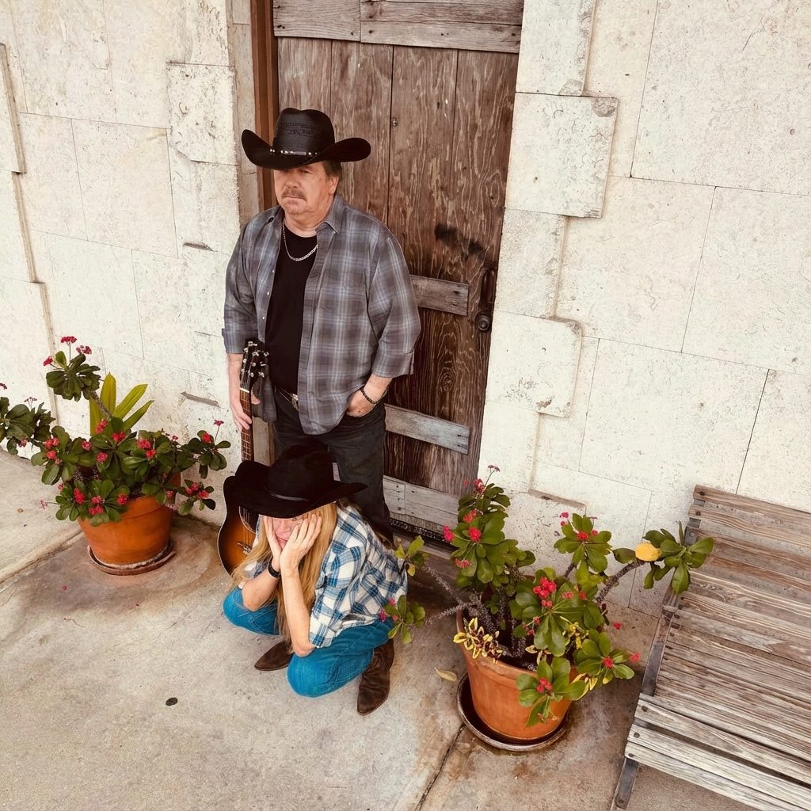

Award-Winning Florida Country Singer-Songwriter
Traditional country music rooted in real stories, honest lyrics, and classic sound.

Terry W. Crossen is a Florida-based country singer-songwriter known for his traditional sound and heartfelt storytelling. He is a five-time Artists Music Guild Heritage Award-winning songwriter, earning recognition from 2017 through 2019.
With a style grounded in classic country traditions, Terry’s music reflects everyday life, personal experiences, and the timeless themes that define country music.
Discover Terry W. Crossen’s music across all major platforms. Stream his latest releases, explore his catalog, and follow for new songs and updates.
Watch live performances, original songs, and featured videos on Terry’s official YouTube channel.
Stay connected with Terry W. Crossen. Follow on social media and never miss new music, videos, or announcements.
Traditional Country | Florida, USA
Five-time Artists Music Guild Heritage Award-winning songwriter.
{kind=link}
{kind=link}